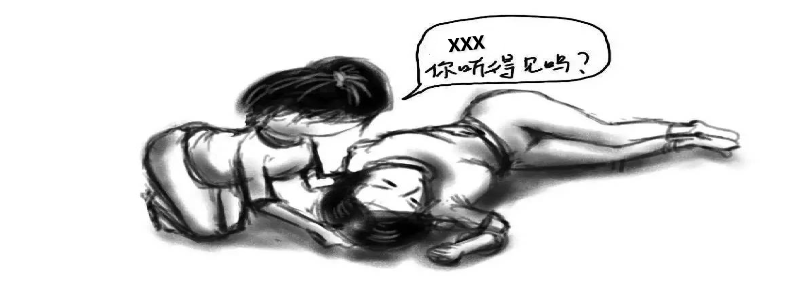
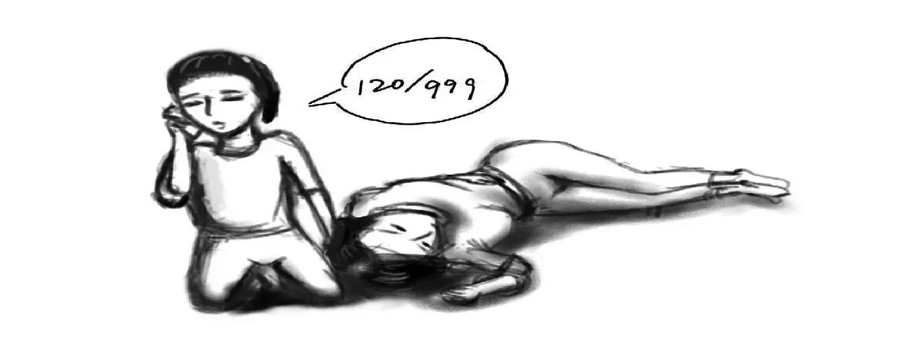
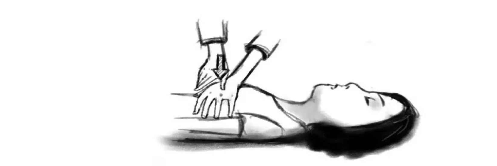
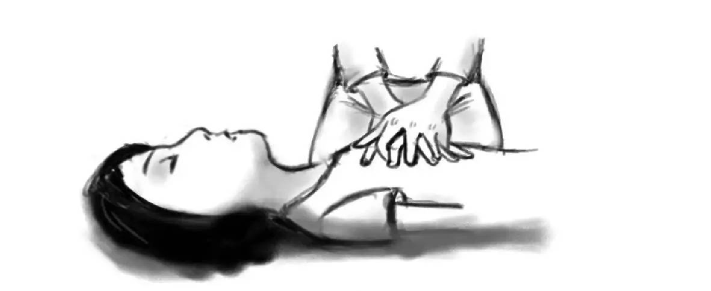
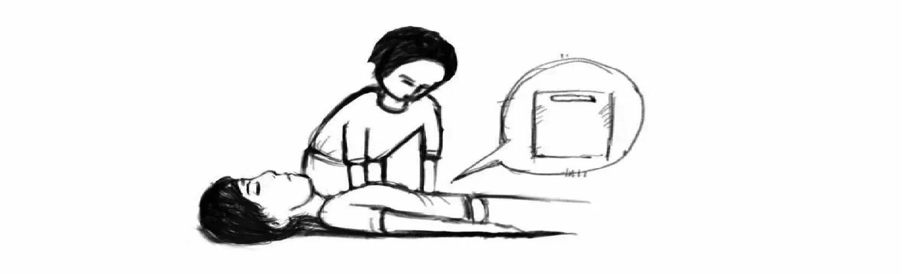
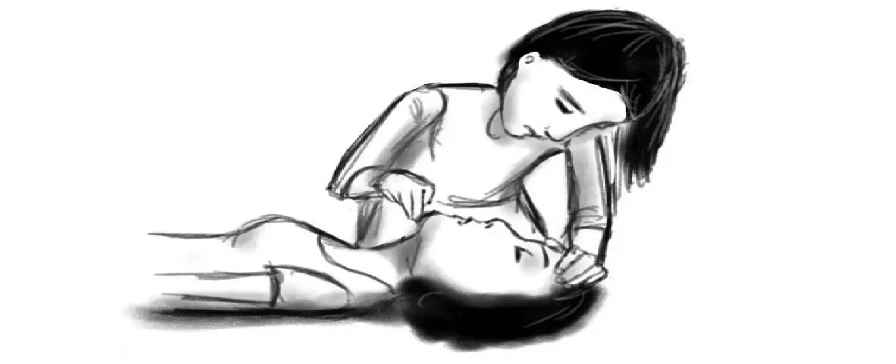
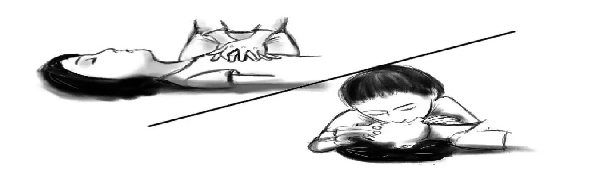

心肺复苏
急救技能 1——心肺复苏术（CPR）
什么是心肺复苏
心肺复苏是针对各种原因引起的呼吸和心跳突然停止所采取的一系列规范的有序的抢救措施。
心肺复苏的主要措施包括以人工呼吸替代病人的自主呼吸，以心脏胸外按压形成暂时的血液循环并激发患者心脏的跳动。
如何进行心肺复苏
- 保持冷静，轻轻摇晃肩膀，大声且清楚地询问患者是否听得见。

- 若没有应答，马上拨打 120！电话信息一定要简洁清晰！

- 等待救护车来前，把耳朵贴近患者的鼻子和嘴巴，听是否有微弱的呼吸。
若有呼吸，则等待救护车；若没有呼吸，需要做心肺复苏（有 CAB 三步）。
- C（Circulation，循环）：胸外心脏按压。抢救者在病人的右侧，左手掌根部置于患者两乳头连线中点，或胸骨下部，右手掌压在左手背上，两手的手指翘起，不接触患者胸壁。双手垂直向下，快速用力按压 30 次，每分钟 100-120 次，每次下压 5-6 厘米（小儿 1-2 厘米）。
注：按压部位不宜过低，以免损伤肝、胃等内脏。压力要适宜，过轻不足以推动血液循环；过重会使胸骨骨折，带来气胸血胸。


-
A（Airway，气道）：将患者平卧在平坦的地方，急救者一般站或跪在病人的右侧，将一只手放在患者额头，用另一只手的食指和中指提起下巴骨头下方，让头部充分后仰。


- B（Breathing，呼吸）：用手捏住患者鼻子；用双唇包住患者的嘴巴，对患者的嘴巴吹气，持续大约 1 秒，见到患者胸腹部起伏后即可停止；进行 2 次人工呼吸，返回第 1 步，继续进行胸外按压。
注：吹气量不宜过大，吹气时间不宜过长，以免发生急性胃扩张。

- 如患者恢复呼吸，则将患者置于复原体位：一条腿弯着，一条腿伸直。
心肺复苏视频教学版：中国红十字会总会训练中心